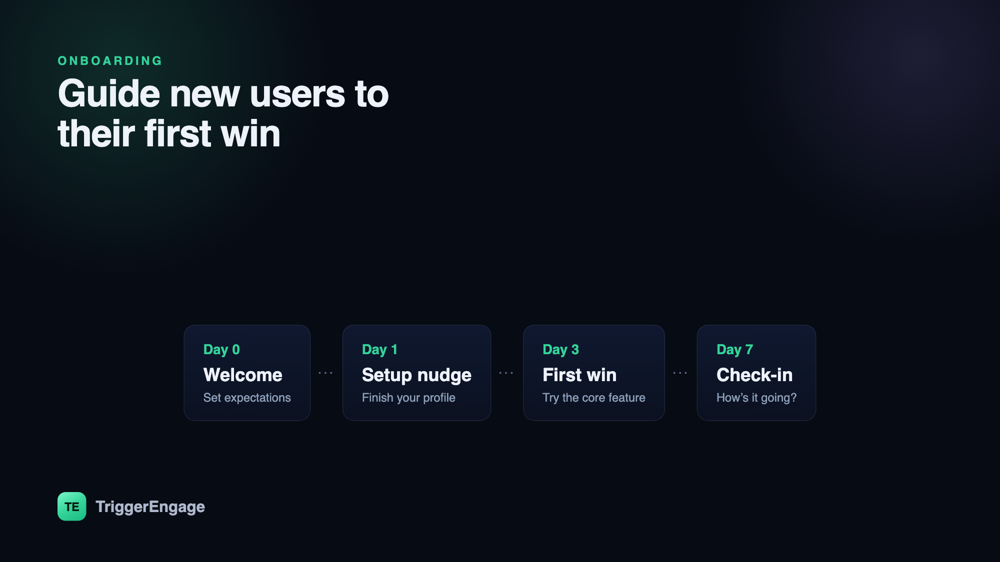

The first week decides whether a signup becomes a user. Great onboarding emails guide people to their "aha" moment — the point where the product finally clicks — by doing one thing at a time: one email, one goal. They are not a newsletter and not a feature dump. They are a series of small, well-timed nudges that move someone from "I signed up" to "I use this." Here are 8 examples that work, with the trigger, timing, and goal behind each so you can adapt them to your own product.

What makes onboarding emails work
Before the examples, the pattern. Onboarding emails that actually move activation share four traits, and every example below follows them:
- Each is triggered. It fires off a real action or the absence of one — a signup, a first project, an idle account — not a fixed marketing calendar. The email arrives because of what the user did.
- Each has a single job. One idea per email. If you find yourself writing "and also," it is probably two emails.
- Each points to one action. One primary button, one link, one next step. Competing calls to action split attention and lower clicks.
- Each stops once the user activates. When someone completes the goal, the nudge for that goal ends. Nothing reads as more robotic than "finish setting up" after you already finished.
Hold those four in mind and the examples below stop looking like templates and start looking like a system.
8 onboarding emails that work
1. The welcome email
Trigger: account created. Timing: immediately — within seconds. Goal: confirm the signup worked, set expectations, and hand off to the single most important first step.
The welcome email has the highest open rate you will ever get, because the user just typed their password and is watching their inbox. Do not waste it on a company manifesto. Thank them, tell them in one line what to expect, and give them one thing to do. Keep design light — a plain, personal-looking email often beats a heavy template here.
Example subject line: "Welcome to Acme — here's your first step"
2. The get-started (first-step) email
Trigger: signup, sent shortly after the welcome. Timing: a few hours to a day later. Goal: drive the one setup action that predicts retention — the "key" step, like inviting a teammate, connecting a data source, or creating a first project.
Every product has a step that separates people who stick from people who churn. Find it in your data, then build one email whose only purpose is to get the user across it. Show the payoff, not the mechanics: "Connect your store and see live revenue in 60 seconds" beats "Go to Settings > Integrations."
Example subject line: "Do this one thing to get value from Acme"
3. The feature spotlight
Trigger: key setup completed. Timing: day 2–3. Goal: show the core feature that delivers the product's central value, now that the basics are in place.
Once the user has done the first step, show them the thing your best customers love. Pick the one feature most correlated with long-term use and demonstrate it with a concrete outcome — a screenshot, a short GIF, a one-sentence "here's what this saves you." Resist listing five features; pick the one that matters.
Example subject line: "The feature our power users open every day"
4. The social proof / use-case email
Trigger: active but not yet deeply engaged. Timing: day 3–4. Goal: show how similar customers succeed, so the user can picture their own workflow.
People adopt faster when they see someone like them winning. A short customer story, a specific metric ("cut reporting time from 3 hours to 20 minutes"), or a use-case walkthrough gives the user a template to copy. Match the example to the segment where you can — a solo founder and an enterprise team need different proof.
Example subject line: "How teams like yours use Acme"
5. The setup-incomplete nudge
Trigger: behavior-based — the user has not done a specific step within a window. Timing: 1–2 days after the step was expected. Goal: remove the blocker and get them to finish.
This is the highest-leverage email in the set because it targets exactly the people who are stuck. Only send it to users who genuinely haven't completed the step — never to those who already have. Name the specific unfinished action, offer help, and link straight to where they left off. A gentle "still need to connect your calendar? It takes about a minute" recovers more accounts than any broadcast.
Example subject line: "You're one step away from finishing setup"
6. The milestone celebration
Trigger: user completed something meaningful — first report shipped, tenth message sent, first invite accepted. Timing: immediately after the action. Goal: reinforce the behavior and pull them toward the next one.
Positive reinforcement builds habits. Acknowledge the win specifically ("You just published your first dashboard"), then suggest the natural next move. Celebration emails feel good to receive and quietly raise the odds the user repeats the behavior.
Example subject line: "Nice — you just shipped your first report"
7. The check-in / offer-help email
Trigger: user is a few days into the trial or free plan. Timing: day 5–7. Goal: open a human line, surface blockers, and remind them help exists.
Written as if from a real person on the team, this email asks a simple question — "How's it going? Anything getting in your way?" — and invites a reply. It works even when nobody answers, because it signals that a human is behind the product. For stuck users, it is often the prompt that gets them to admit what's blocking them.
Example subject line: "Quick question about your Acme setup"
8. The next-step / upgrade prompt
Trigger: user is activated — they've hit the core value and use the product regularly. Timing: once activation is confirmed, near the end of a trial or after a usage threshold. Goal: move them to the next commitment — a paid plan, a bigger seat count, or a deeper feature.
Only ask for the upgrade after the value is obvious. Tie the pitch to what they've already done: "You've run 40 reports this week — the Pro plan removes the limit." An upgrade email sent to an activated user is a natural next step; sent to a confused one, it's noise.
Example subject line: "Ready for more? Here's what Pro unlocks"
Sequence them — don't blast
These eight emails are not eight blasts on day one. They are a sequence: spaced out over the first week or two, with later emails gated on whether earlier steps happened. This is a classic lifecycle sequence — sometimes called a drip campaign — where each message depends on the state the user is in.
A simple map of the flow:
| Day | Trigger | |
|---|---|---|
| 0 | Welcome | Signup |
| 0–1 | Get started | Signup |
| 2–3 | Feature spotlight | Key step done |
| 3–4 | Social proof | Active user |
| 1–2 after skip | Setup nudge | Step not done |
| Any | Milestone | Action completed |
| 5–7 | Check-in | Trial in progress |
| End of trial | Upgrade | Activated |
The branches matter as much as the timing. A user who finishes setup on day one skips the nudge entirely and moves straight to the spotlight. A user who stalls gets the nudge and holds until they act. Time is the default; behavior is the override.
Personalize and test
Generic onboarding emails underperform for a simple reason: they ignore what the system already knows. Use the user's name, their plan, the step they're on, and the segment they belong to. You can personalize with Liquid to swap subject lines, copy, and calls to action based on those attributes — one template, many tailored variants.
Then test the parts that move the needle. Subject lines and send timing usually have the biggest impact on opens and clicks, so A/B test those first. Change one variable at a time, let the result reach significance, and keep the winner. Small, compounding wins across an eight-email sequence add up to a meaningful activation lift.
How to trigger them
All of this depends on one thing: your app telling your messaging system what the user did. Fire the signup, setup-complete, milestone, and activation events from your app, and let the journey handle the rest — the delays between steps, the branches for who did what, and the goals that stop a sequence once it's served its purpose.
An event-based tool makes this practical. Trigger Engage builds journeys with delays, branches, and goals that fire from events your app sends — and it's free, open source, and self-hostable, so you own the data and skip the per-user bill. Emit the events, design the flow once, and every new signup walks through it automatically.